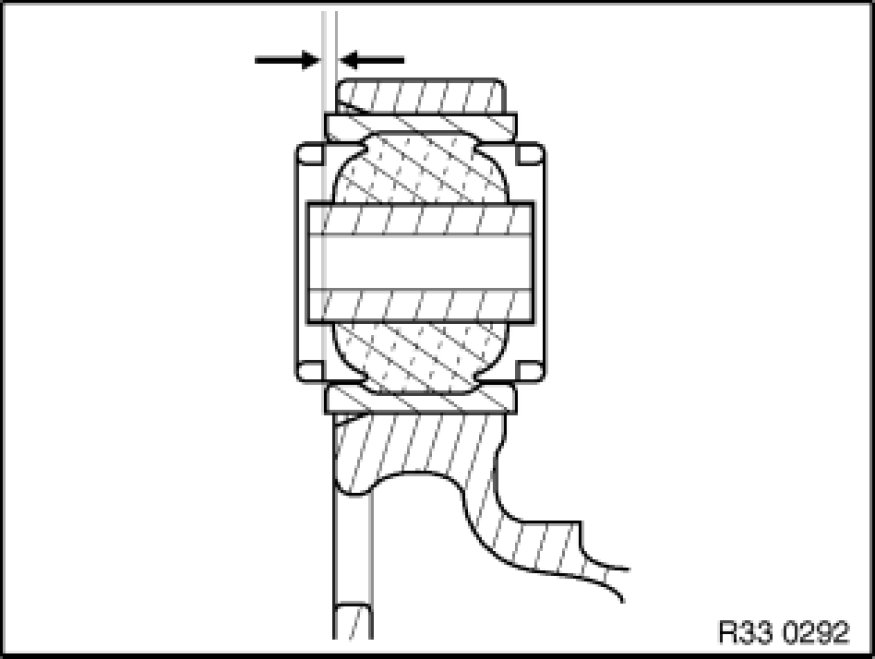

Replacing a Rubber Mount in Trailing Arm, Front
33 32 042 - Replacing a rubber mount in trailing arm, front

Special tools required:
- 33 3 144
- 33 3 145
- 33 3 222 33 3 220 Set of Tools
- 33 3 227 33 3 220 Set of Tools
- 33 3 228 33 3 220 Set of Tools

Necessary preliminary tasks:
- Remove bearing block Replacing Bearing Block for Front Trailing Arm
Important!
The arrow on special tool 33 3 228 33 3 220 Set of Tools must point in the pull-out direction!
Pull out rubber mount with special tools 33 3 144, 33 3 145, 33 3 222 33 3 220 Set of Tools, 33 3 227 33 3 220 Set of Tools, 33 3 228 33 3 220 Set of Tools and nut (1).
Mark trailing arm eye with a colored dot (K) as shown in illustration on left.
Keep rubber mount and trailing arm eye clean and free from oil and grease.
Important!
Slot in rubber mount must match up with end of arrow on special tool 33 3 228 33 3 220 Set of Tools!
Insert rubber mount in special tool 33 3 228 33 3 220 Set of Tools and align.
Important!
Arrow on special tool 33 3 228 33 3 220 Set of Tools must point to colored dot (K)!
Draw in rubber mount with special tools 33 3 144, 33 3 145, 33 3 222 33 3 220 Set of Tools, 33 3 227 33 3 220 Set of Tools, 33 3 228 33 3 220 Set of Tools and nut (1) until special tool 33 3 228 33 3 220 Set of Tools becomes loose.

Draw in rubber mount to distance (A) = 2.5 mm.
After installation:
- Check that output shaft is correctly seated in rear differential.
- Perform chassis alignment check